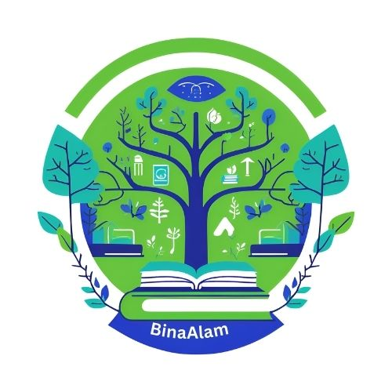
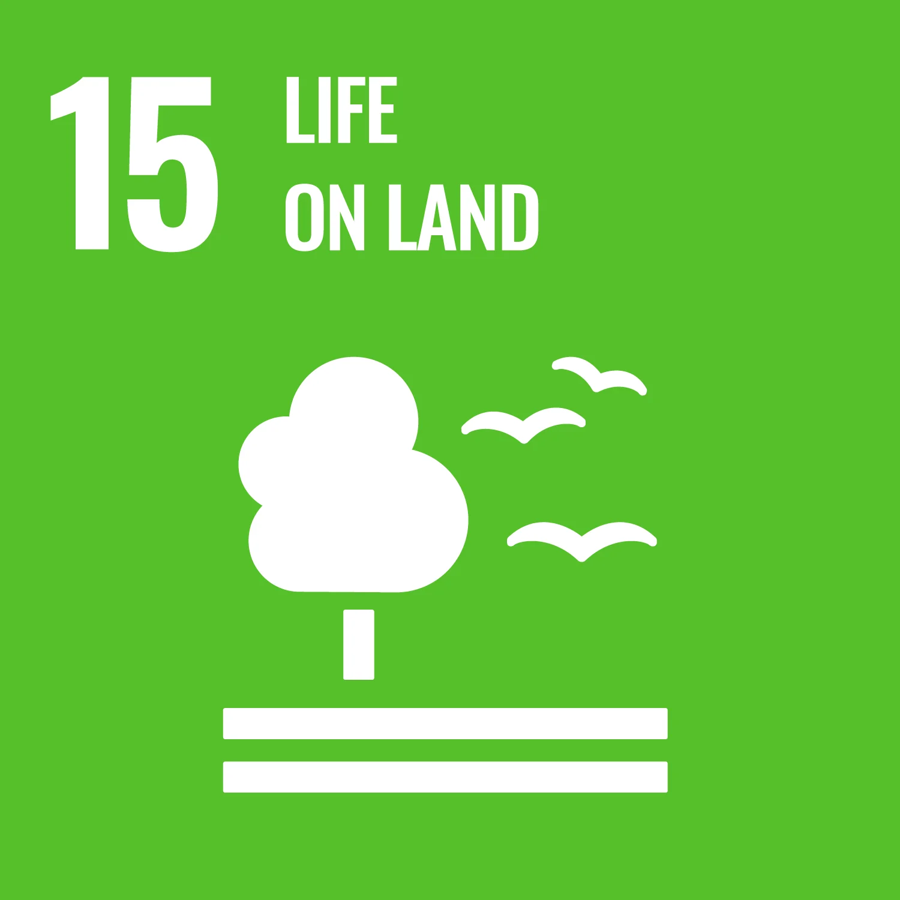
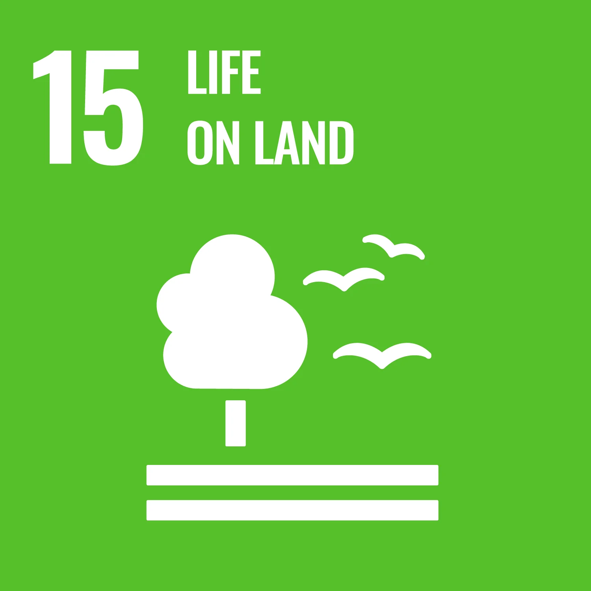
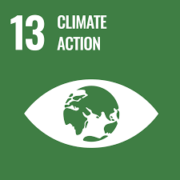
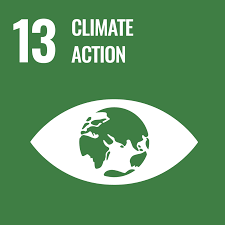

Tentang Kami

BinaAlam adalah organisasi sosial yang berfokus pada edukasi, pemberdayaan masyarakat, dan pelestarian lingkungan hidup. Kami percaya bahwa perubahan besar dimulai dari langkah kecil yang konsisten dan kolaboratif.
Website ini kami buat sebagai wadah untuk berbagi pengetahuan, menginspirasi aksi nyata, dan menghubungkan individu yang peduli terhadap masa depan bumi dan generasi penerus. Kami ingin setiap orang, tanpa memandang latar belakang, dapat berkontribusi dalam menciptakan dunia yang lebih baik.
Alasan Kami Membuat Website Ini
- SDG 1: Tanpa Kemiskinan
Kami ingin membantu mengurangi kemiskinan dengan menyediakan akses pendidikan gratis, peluang relawan, dan dukungan sosial bagi masyarakat kurang mampu. Setiap aksi kecil dapat membuka jalan keluar dari kemiskinan struktural. - SDG 4: Pendidikan Berkualitas
Kami menyediakan modul belajar gratis untuk semua jenjang, ruang diskusi, dan blog edukasi agar setiap anak bangsa dapat memperoleh pendidikan yang layak dan berkualitas tanpa hambatan ekonomi. - SDG 13: Penanganan Perubahan Iklim
Melalui aksi lingkungan, pelaporan dampak, dan edukasi gaya hidup ramah lingkungan, kami mengajak masyarakat untuk bersama-sama melawan perubahan iklim dan menjaga bumi tetap lestari. - SDG 14: Ekosistem Lautan
Kami menggalang aksi bersih-bersih laut, pelaporan sampah laut, dan edukasi tentang pentingnya menjaga ekosistem laut demi keberlanjutan sumber daya dan kehidupan biota laut. - SDG 15: Ekosistem Daratan
Kami aktif dalam pelestarian hutan, reboisasi, pelaporan penebangan liar, serta edukasi pentingnya menjaga keanekaragaman hayati dan ekosistem darat untuk generasi mendatang.

 

 
